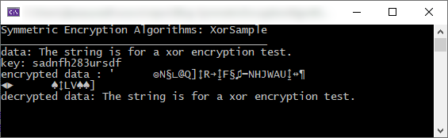

В статье описана начальная концепция симметричных алгоритмов шифрования. В статье рассмотрены основы, что такое симметричное шифрование на примере побитовой операции Xor.

Алгоритмы - Концепция симметричных алгоритмов шифрования
1. Введение
Шифрование — сокрытие данных от посторонних лиц. Алгоритм шифрования предназначен именно для этого.
В шифровании данных используется ключ шифрования. Он представляет собой тоже самое, что и ключ от квартиры, или сундучка, или сейфа.
Виды алгоритмов шифрования:
- Симметричные — это алгоритмы, в которых используется один и тот же ключ для шифрования данных и расшифрования данных.
- Асимметричные — это алгоритмы, в которых один ключ используется для шифрования данных, другой для расшифрования.
2. Пример реализации концепции шифрования на побитовой опереации XOR (Исключающее Или)
Давайте рассмотрим алгоритм шифрования строки data ключом key.
Чтобы строка стала зашифрованной к каждому символу data (строка) применяется соответствующий символ key (ключ) побитовой операцией "исключающее или". В результате получается зашифрованная строка для передачи (или другова использования. Теперь она является зашифрованной. Чтобы её расшифровать применяется тот же алгоритм с тем же ключом. Расшифрация происходит, т.к. алгоритм работает так: data Xor key Xor key, key Xor key = 0 (равно нулю) по определению побитовой операции исключающего или, а data Xor 0 равно data.
Ключ для всех симметричных алгоритмов шифрования должен хранится в тайне.
Приведём функцию на языке C# для симметричного шифрования, основанной на побитовой операции Xor:
public static string XorSample(string data, string key)
{
if (String.IsNullOrEmpty(data) || String.IsNullOrEmpty(key))
return data;
StringBuilder sb = new StringBuilder();
for (int i = 0; i < data.Length; i++)
sb.Append((char)(data[i] ^ key[(i % key.Length)]));
String result = sb.ToString();
return result;
}
Далее приведём код для тестирования этой функции:
using System;
using System.Text;
namespace Blog_SymmetricEncryptionAlgorithms_XorSample
{
class Program
{
static void Main(string[] args)
{
Console.WriteLine("Symmetric Encryption Algorithms: XorSample");
Console.WriteLine("__________________________________________");
string data = "The string is for a xor encryption test.";
string key = "sadnfh283ursdf";
Console.WriteLine($"data: {data}");
Console.WriteLine($"key: {key}");
Console.WriteLine($"encrypted data : {XorSample(data, key)}");
Console.WriteLine($"decrypted data: {XorSample(XorSample(data, key), key)}");
Console.ReadLine();
}
public static string XorSample(string data, string key)
{
if (String.IsNullOrEmpty(data) || String.IsNullOrEmpty(key))
return data;
StringBuilder sb = new StringBuilder();
for (int i = 0; i < data.Length; i++)
sb.Append((char)(data[i] ^ key[(i % key.Length)]));
String result = sb.ToString();
return result;
}
}
}
Результат работы:

Рис. 1. Результат работы Xor-шифрования строк.
3. Известные алгоритмы симметричного шифрования на текущий день (основные)
Конкретные алгоритмы симметричного шифрования вы можете найти в интернете или в профильной литературе, допустим посетите Политехническую библиотеку на Лубянке, там находится большое собрание технической литературы.
4. Заключение
В заключение я могу вам пожелать успехов в карьере, в обучении и криптографии, развивайте свои знания дальше. Желаю успехов!